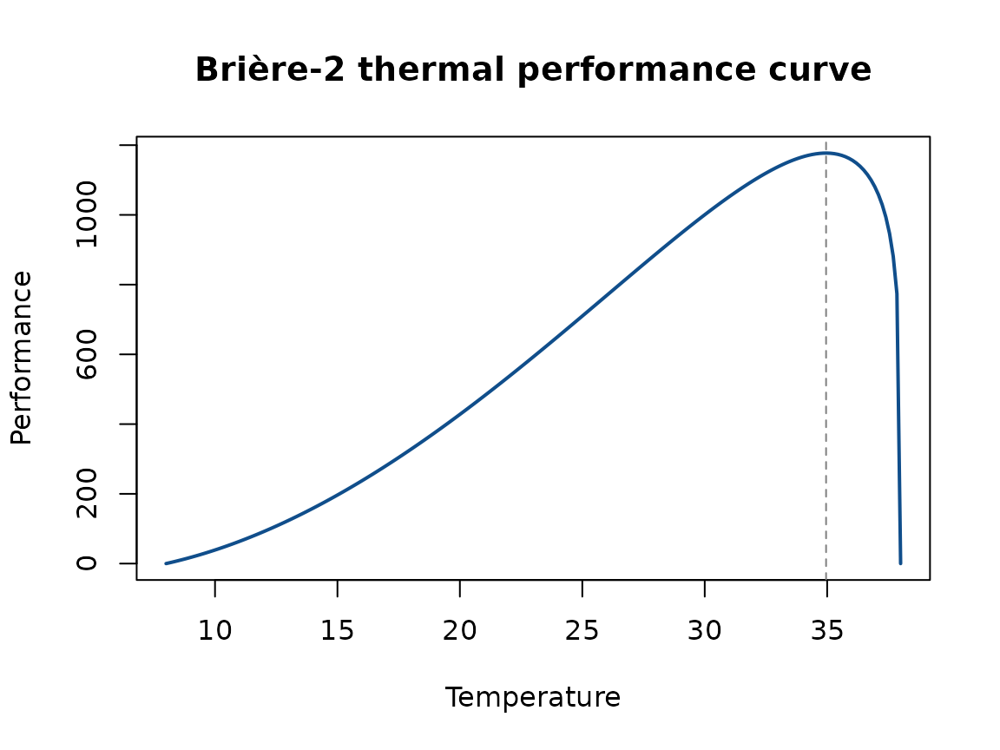
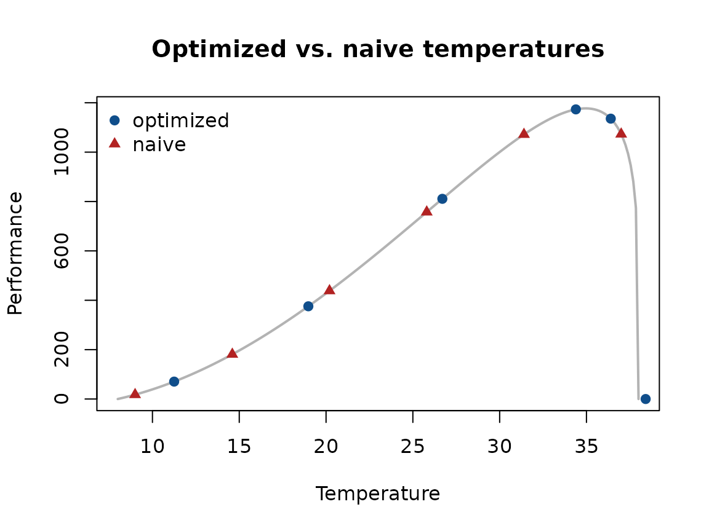

Motivation
Thermal performance curves (TPCs) describe how some measure of performance (growth, fecundity, survival, etc.) changes with temperature. Fitting a TPC requires choosing which temperatures to measure performance at, and that choice matters: temperatures clustered in an uninformative part of the curve (e.g., only near the thermal optimum) can leave the edges of the curve – the critical thermal minimum and maximum – poorly estimated, even with a large sample size.
TPCdesign helps you choose experimental temperatures that are maximally informative for fitting a Brière-2 TPC, given a rough prior guess at that curve’s shape. This vignette walks through the full workflow:
- Define a Brière-2 TPC using rough prior guesses at its parameters.
- Use
design_temps()to choose informative temperatures for that curve. - Simulate data from the true curve at those temperatures with
sim_gamma_data(). - Fit the simulated data and check how well the true parameters are recovered, compared to a naive, equally-spaced set of temperatures.
The Brière-2 TPC
The Brière-2 curve is parameterized by a lower thermal limit
(ctmin), an upper thermal limit (ctmax), and
shape parameters a and b.
briere2_tpc() evaluates the curve, and
briere2_tpc_Topt() returns its thermal optimum:
true_ctmin <- 8
true_ctmax <- 38
true_a <- 1
true_b <- 0.2
temp_grid <- seq(true_ctmin, true_ctmax, length.out = 200)
perf <- briere2_tpc(temp_grid, true_ctmin, true_ctmax, true_a, true_b)
topt <- briere2_tpc_Topt(true_ctmin, true_ctmax, true_b)
plot(temp_grid, perf, type = "l", lwd = 2, col = "dodgerblue4",
xlab = "Temperature", ylab = "Performance",
main = "Brière-2 thermal performance curve")
abline(v = topt, lty = 2, col = "grey50")
In practice, you never know these parameters exactly ahead of time –
you only have rough guesses, which is exactly what
design_temps() is built to work with.
Choosing informative temperatures
design_temps() takes your best guess at
ctmin, ctmax, a, and
b, along with how uncertain you are about each of
ctmin, ctmax, and b
(ctmin_err, ctmax_err, and
logb_err, respectively), and searches for the set of
temperatures that is expected to be most informative across that range
of plausible curves. Here we ask for 6 temperatures, treating our
guesses above as uncertain by a few degrees:
set.seed(1)
opt_temps <- design_temps(
n_temps = 6,
ctmin = true_ctmin, ctmax = true_ctmax, a = true_a, b = true_b,
ctmin_err = 2, ctmax_err = 1.5, logb_err = 0.26,
n_draws = 100L, n_starts = 3L, n_filler = 1L
)
opt_temps
#> [1] 11.25 18.98 26.70 34.39 36.40 38.41For comparison, a naive design might just space temperatures evenly across the same range:
naive_temps <- round(seq(true_ctmin + 1, true_ctmax - 1, length.out = 6), 2)
naive_temps
#> [1] 9.0 14.6 20.2 25.8 31.4 37.0
Note how the optimized design concentrates more temperatures near
ctmax, where the curve is changing quickly and is therefore
more informative about where the curve actually crosses zero, while the
naive design spreads temperatures out with no regard for the curve’s
shape.
Simulating data
Once you have a set of temperatures, sim_gamma_data()
simulates performance measurements at them, with observation error drawn
from a gamma distribution. Temperatures at or outside ctmin
and ctmax have an expected performance of zero, so their
simulated values are 0:
dat_opt <- sim_gamma_data(opt_temps, n_reps = 6L, obs_cv = 0.15,
ctmin = true_ctmin, ctmax = true_ctmax,
a = true_a, b = true_b)
head(dat_opt)
#> temp y
#> 1 11.25 69.87929
#> 2 11.25 70.63575
#> 3 11.25 73.04957
#> 4 11.25 70.57304
#> 5 11.25 99.42176
#> 6 11.25 58.83897Does the optimized design actually help?
To check whether the optimized temperatures are worth using, we can
simulate data from both designs and fit the Brière-2 curve back to each
dataset, then compare how precisely the true parameters are recovered.
This requires the nls.multstart package, so this section is
skipped if it isn’t installed:
dat_naive <- sim_gamma_data(naive_temps, n_reps = 6L, obs_cv = 0.15,
ctmin = true_ctmin, ctmax = true_ctmax,
a = true_a, b = true_b)
# Search bounds for starting values, matching how uncertain we said we
# were when calling design_temps() above. These must be given in the same
# order the parameters first appear in the model formula below
# (a, ctmin, ctmax, b).
b_bounds <- exp(log(true_b) + c(-1, 1) * 0.26)
start_lower <- c(a = 0.5, ctmin = true_ctmin - 2, ctmax = true_ctmax - 1.5,
b = b_bounds[1])
start_upper <- c(a = 1.5, ctmin = true_ctmin + 2, ctmax = true_ctmax + 1.5,
b = b_bounds[2])
fit_tpc <- function(dat) {
nls.multstart::nls_multstart(
y ~ a * temp * pmax(temp - ctmin, 0) * pmax(ctmax - temp, 0)^b,
data = dat, iter = 100,
start_lower = start_lower, start_upper = start_upper,
supp_errors = "Y", convergence_count = 30
)
}
fit_opt <- fit_tpc(dat_opt)
fit_naive <- fit_tpc(dat_naive)
comparison <- rbind(
truth = c(a = true_a, ctmin = true_ctmin, ctmax = true_ctmax, b = true_b),
`optimized estimate` = coef(fit_opt),
`optimized SE` = summary(fit_opt)$coefficients[, "Std. Error"],
`naive estimate` = coef(fit_naive),
`naive SE` = summary(fit_naive)$coefficients[, "Std. Error"]
)
round(comparison, 3)
#> a ctmin ctmax b
#> truth 1.000 8.000 38.000 0.200
#> optimized estimate 1.173 5.992 36.467 0.079
#> optimized SE 0.100 2.918 0.174 0.054
#> naive estimate 0.479 9.643 42.317 0.482
#> naive SE 0.612 2.393 6.971 0.434In this simulation, the estimates from the optimized design are
closer to the true parameter values, and their standard errors are
noticeably smaller – especially for ctmax and
b, which the optimized design samples much more densely
near the curve’s upper edge. This is the practical benefit of using
design_temps(): for the same number of temperatures and
replicates, the resulting fit is more precise.
Summary
-
briere2_tpc()andbriere2_tpc_Topt()let you explore a candidate TPC before designing an experiment around it. -
design_temps()turns rough prior guesses (and how uncertain you are about them) into a set of temperatures expected to be informative for fitting that curve. -
sim_gamma_data()lets you simulate data from a design before running the real experiment, so you can sanity-check it (as we did above) or perform a full power analysis.